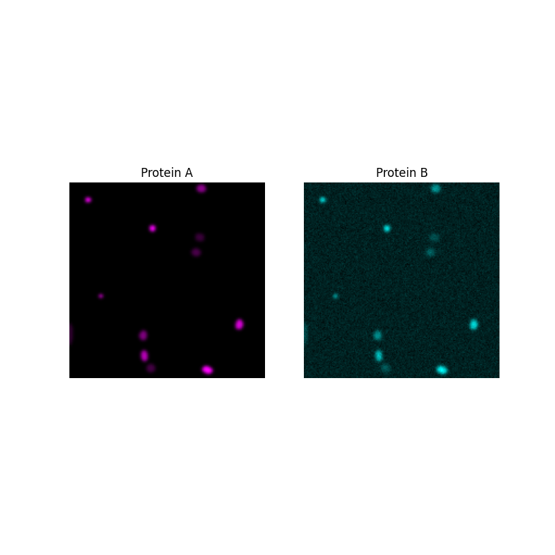

Source
SourceNote
Click here to download the full example code or to run this example in your browser via Binder
Colocalization metrics¶
In this example, we demonstrate the use of different metrics to assess the colocalization of two different image channels.
Colocalization can be split into two different concepts: 1. Co-occurence: What proportion of a substance is localized to a particular area? 2. Correlation: What is the relationship in intensity between two substances?
Co-occurence: subcellular localization¶
Imagine that we are trying to determine the subcellular localization of a protein - is it located more in the nucleus or cytoplasm compared to a control?
We begin by segmenting the nucleus of a sample image as described in another example and assume that whatever is not in the nucleus is in the cytoplasm. The protein, “protein A”, will be simulated as blobs and segmented.
import random
import matplotlib.pyplot as plt
import numpy as np
from matplotlib.colors import LinearSegmentedColormap
from scipy import ndimage as ndi
from skimage import data, filters, measure, segmentation
random.seed(36)
# segment nucleus
nucleus = data.protein_transport()[0, 0, :, :180]
smooth = filters.gaussian(nucleus, sigma=1.5)
thresh = smooth > filters.threshold_otsu(smooth)
fill = ndi.binary_fill_holes(thresh)
nucleus_seg = segmentation.clear_border(fill)
# protein blobs of varying intensity
proteinA = np.zeros_like(nucleus, dtype="float64")
proteinA_seg = np.zeros_like(nucleus, dtype="float64")
for blob_seed in range(10):
blobs = data.binary_blobs(180,
blob_size_fraction=0.5,
volume_fraction=(50/(180**2)),
seed=blob_seed)
blobs_image = filters.gaussian(blobs, sigma=1.5)*random.randint(50, 256)
proteinA += blobs_image
proteinA_seg += blobs
# plot data
fig, ax = plt.subplots(3, 2, figsize=(8, 12), sharey=True)
ax[0, 0].imshow(nucleus, cmap=plt.cm.gray)
ax[0, 0].set_title('Nucleus')
ax[0, 1].imshow(nucleus_seg, cmap=plt.cm.gray)
ax[0, 1].set_title('Nucleus segmentation')
black_magenta = LinearSegmentedColormap.from_list("", ["black", "magenta"])
ax[1, 0].imshow(proteinA, cmap=black_magenta)
ax[1, 0].set_title('Protein A')
ax[1, 1].imshow(proteinA_seg, cmap=black_magenta)
ax[1, 1].set_title('Protein A segmentation')
ax[2, 0].imshow(proteinA, cmap=black_magenta)
ax[2, 0].imshow(nucleus_seg, cmap=plt.cm.gray, alpha=0.2)
ax[2, 0].set_title('Protein A\nwith nucleus overlaid')
ax[2, 1].imshow(proteinA_seg, cmap=black_magenta)
ax[2, 1].imshow(nucleus_seg, cmap=plt.cm.gray, alpha=0.2)
ax[2, 1].set_title('Protein A segmentation\nwith nucleus overlaid')
for a in ax.ravel():
a.set_axis_off()
Intersection coefficient¶
After segmenting both the nucleus and the protein of interest, we can determine what fraction of the protein A segmentation overlaps with the nucleus segmentation.
0.22
Manders’ Colocalization Coefficient (MCC)¶
The overlap coefficient assumes that the area of protein segmentation corresponds to the concentration of that protein - with larger areas indicating more protein. As the resolution of images are usually too small to make out individual proteins, they can clump together within one pixel, making the intensity of that pixel brighter. So, to better capture the protein concentration, we may choose to determine what proportion of the intensity of the protein channel is inside the nucleus. This metric is known as Manders’ Colocalization Coefficient.
In this image, while there are a lot of protein A spots within the nucleus they are dim compared to some of the spots outside the nucleus, so the MCC is much lower than the overlap coefficient.
0.1254942609923002
After choosing a co-occurence metric, we can apply the same process to control images. If no control images are available, the Costes method could be used to compare the MCC value of the original image with that of the randomly scrambled image. Information about this method is given in [1].
Correlation: association of two proteins¶
Now, imagine that we want to know how closely related two proteins are.
First, we will generate protein B and plot intensities of the two proteins in every pixel to see the relationship between them.
# generating protein B data that is correlated to protein A for demo
rng = np.random.default_rng()
proteinB = proteinA + rng.normal(loc=100, scale=10, size=proteinA.shape)
# plot images
fig, ax = plt.subplots(1, 2, figsize=(8, 8), sharey=True)
ax[0].imshow(proteinA, cmap=black_magenta)
ax[0].set_title('Protein A')
black_cyan = LinearSegmentedColormap.from_list("", ["black", "cyan"])
ax[1].imshow(proteinB, cmap=black_cyan)
ax[1].set_title('Protein B')
for a in ax.ravel():
a.set_axis_off()
# plot pixel intensity scatter
plt.figure()
plt.scatter(proteinA, proteinB)
plt.title('Pixel intensity')
plt.xlabel('Protein A intensity')
plt.ylabel('Protein B intensity')
- 
Text(38.347222222222214, 0.5, 'Protein B intensity')
The intensities look linearly correlated so Pearson’s Correlation Coefficient would give us a good measure of how strong the association is.
PCC: 0.818, p-val: 0
Sometimes the intensities are correlated but not in a linear way. A rank-based correlation coefficient like Spearman’s might give a more accurate measure of the non-linear relationship in that case.
Total running time of the script: ( 0 minutes 0.481 seconds)